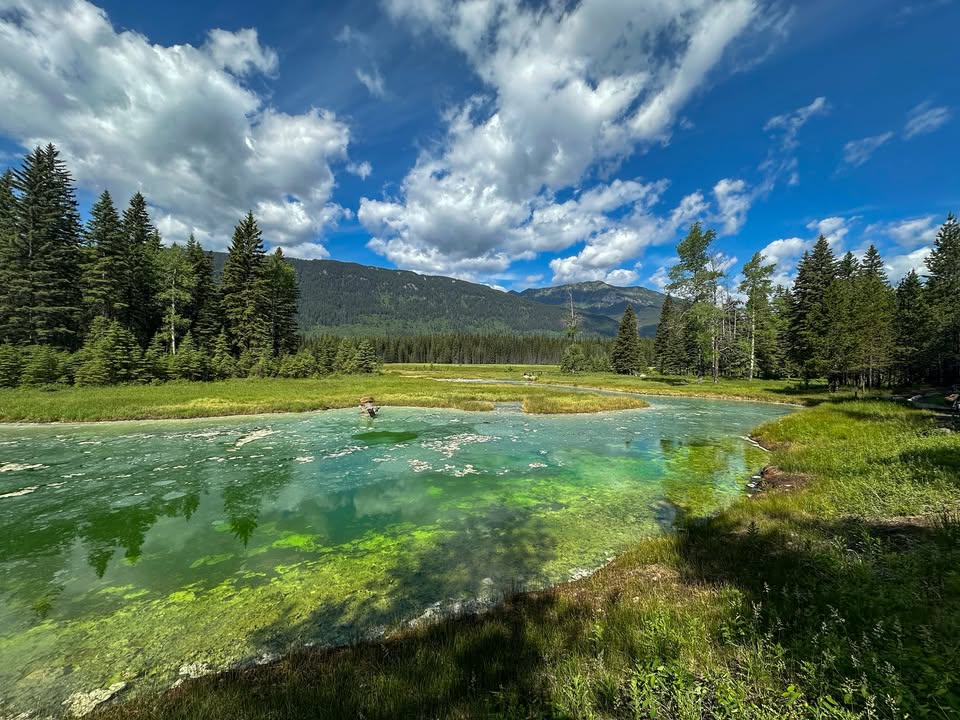
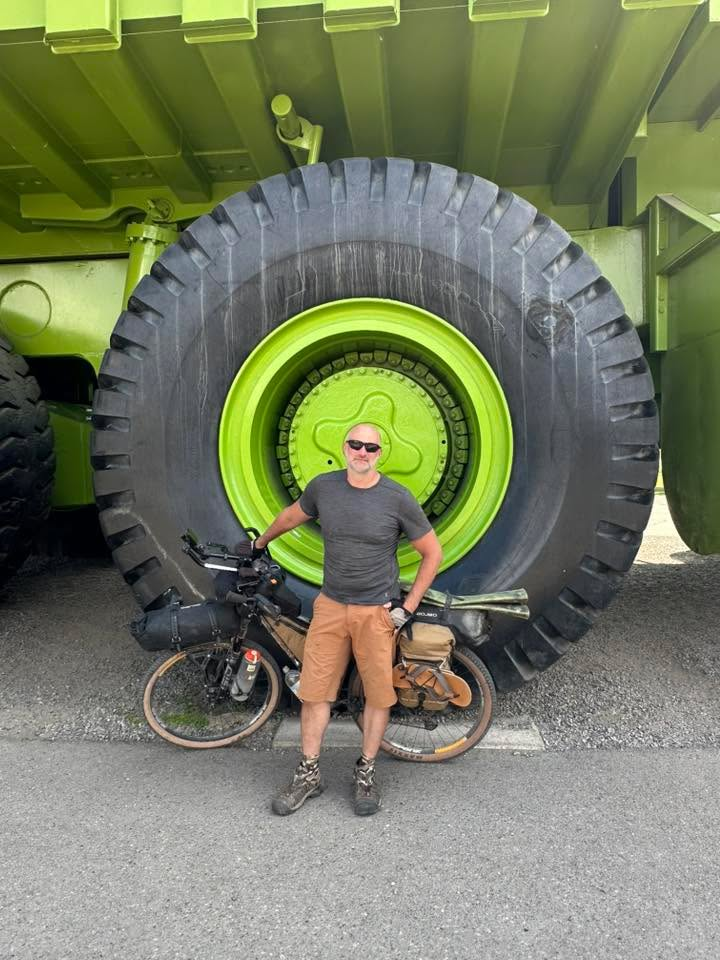
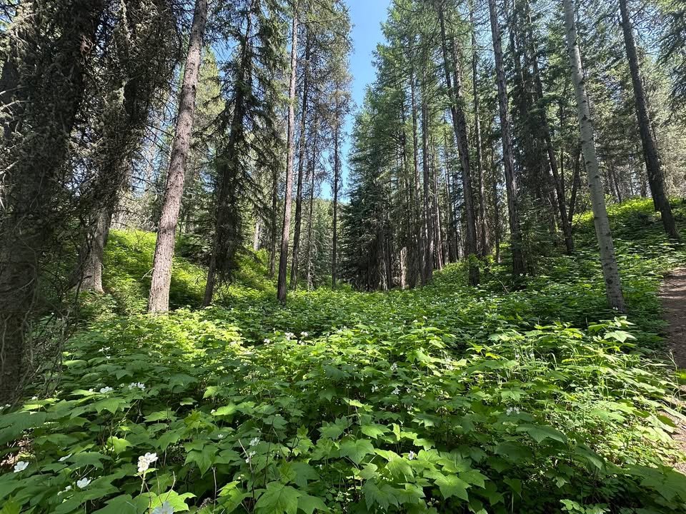
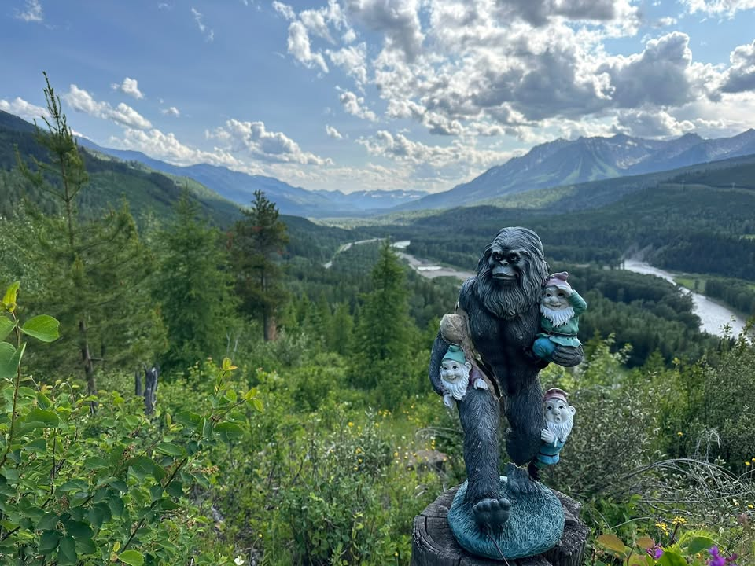
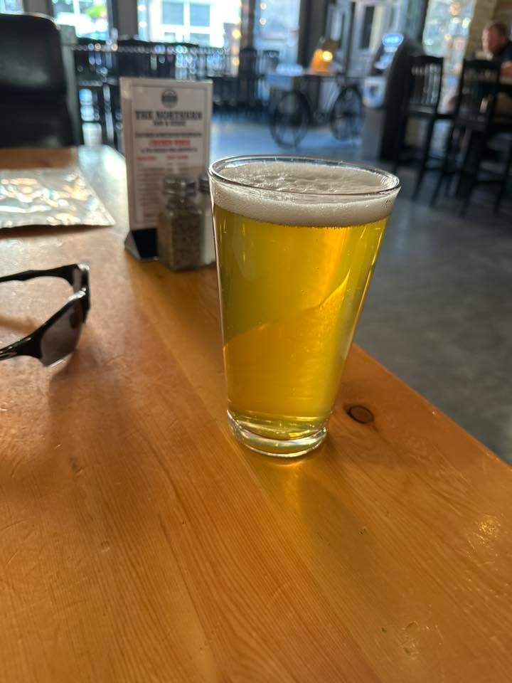
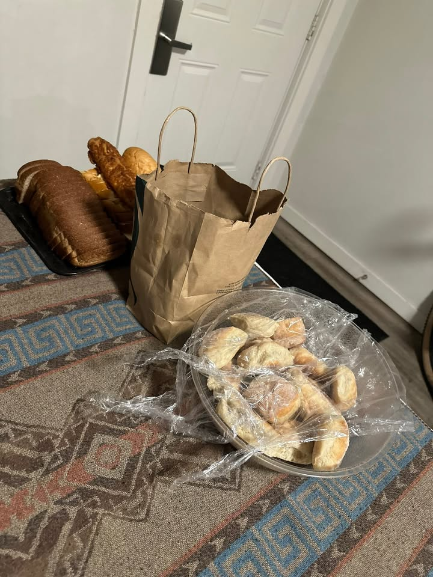

Waking up early in our campground, I was able to get two cups of coffee. Not as much as I drink on a day-to-day basis, but it was a good start. Packing up took a long time, and we stopped off at a gas station for some last-minute fuel/snacks. An odd thing that will come up later: I talked to a kid in a black Ford.
We had a pretty big climb right out of the gate, but it was on some nice single-track trails that wound through the woods and at times felt like a roller coaster. When it opened up, it was a great-looking little trail that overlooked the valley. Also, on one of the bridges we crossed, we saw the kid in the black Ford again.

From the Journey
Another odd biking event happened while climbing up a hill. I rolled over a stick a couple of inches in diameter and about a foot long, and it immediately bounced up and wedged itself in my spokes, which stopped my bike immediately. Luckily, I was not going very fast, and it did not do any damage. Happy Father’s Day to me!
Eventually, our trails led us into a small mining community, and we bumped into, you guessed it, the kid in the black Ford once again. Oddly, we encountered this kid three times on our trip today. We told them next time we see each other they’re buying.
We also found some other bikers we had camped with the night before. One of them is the firefighter who helped the injured biker on the trail the day before. He mentioned his leg is suffering from some pain and that he will not be riding tomorrow to give it some rest. We all enjoyed some chicken wings and a milkshake in town and chatted about injured legs, good food, equipment, and quite a few other topics as we dusted off the dirt from the trail.
Before leaving town, taking pictures with the enormous dump truck was a must. Then it was back to some single-track trails that wound through a forest that looked like Endor (Star Wars reference).

From the Journey

From the Journey
We had a really long ride that took us to an overlook featuring a small statue of a Sasquatch wrestling some gnomes. It was a great view, even though we were pretty exhausted. However, it was at about that time we realized we were quite far off the trail. Not Lost.

From the Journey
We kept heading north down some trails and eventually pulled out a map to plot a route on some roads. Another hour of riding put us on a hardball road that led into Fernie.
Getting into Fernie was a big relief. We got hotels, washed our bikes, and headed off to the local bike shop, which was staying open late just for trail riders. I was able to get some bottle cages to replace the ones that broke. Dan was able to get a lower gear, which will help him tremendously on the climbs. I felt his pain from the last time I did this trip with a really high gear. I can’t stress how important it is to get your gears right; it will make all the difference. Before, when my gears were incorrect, it was like taking a racecar to a monster truck event.
As the mechanics worked on his bike, we enjoyed a pretty good burger and a couple of beers.

From the Journey
I was really looking forward to some time in the hot tub; however, we got back to the room late, and it was closed.
There were a couple riders that called me to ask where we were at. I ended up booking them a hotel at our place because the ladies were going to go home for the night. They didn’t show up until midnight to grab their keys from me. They were exhausted and enjoyed the gift baskets I put together for them.

15 June 2025 — Day 3
From the Journey